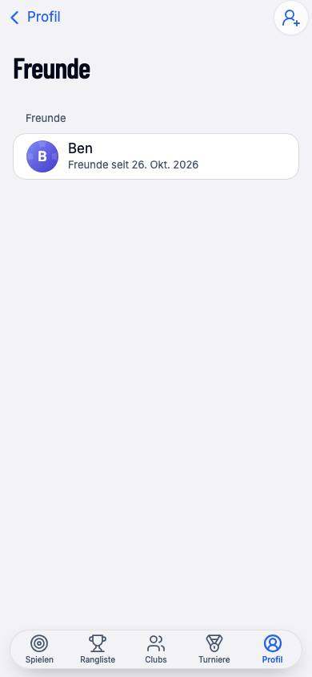
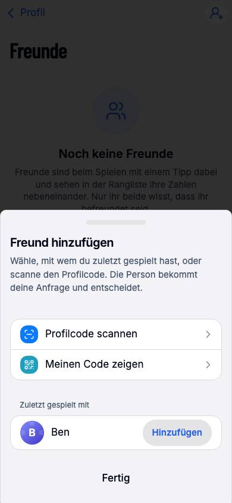
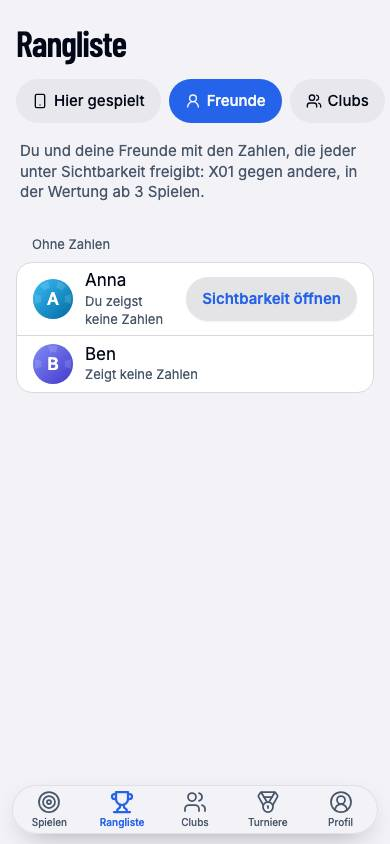
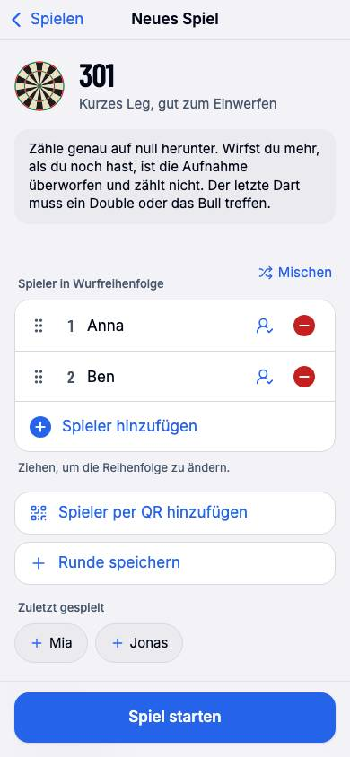

Bis heute kannte BlueLine keine Freunde. Wer mit jemandem spielen, ihn in den Club holen oder seine Zahlen neben den eigenen sehen wollte, musste jedes Mal scannen oder tippen. Dieser Vorschlag führt eine private Freundesliste ein, die im Profil wohnt und in Spielen, Clubs, Turniere und Rangliste hineinreicht. Grundlage: Apple Game Center und Kontakte, die Muster von Strava, Instagram und Duolingo, die Apple Human Interface Guidelines (iOS 26) und das vorhandene Protokoll der App (private Datensätze, Einladungen an ein Profil).
| Nr. | Befund | Wo | Folge |
|---|---|---|---|
| F1 | Mitspieler lassen sich nur über Vergangenheit (Zuletzt gespielt mit) oder Code erreichen; es gibt keinen Ort, an dem eine Person gehalten wird. | Spielen, Clubs, Turniere | Jede Wiederholung kostet einen Scan oder eine Suche. |
| F2 | Die Spielvorbereitung bietet nur Namen aus der Vergangenheit; ein Name ohne Profil zählt in keiner Rangliste außer der des Geräts. | Spielen | Freunde mit Profil landen als Tippname ohne Verbindung. |
| F3 | Die Spielerseite in der Rangliste („X gegen dich“) führt nicht zur öffentlichen Spielerseite, obwohl das Profil bekannt ist. | Rangliste › Hier gespielt | Zahlen und Freundschaft bleiben unerreichbar. |
| F4 | Die Rangliste vergleicht nur Spiele dieses Geräts, Clubs und Turniere. Zwei Freunde, die zu Hause je allein zählen, sehen sich nie. | Rangliste | Kein Vergleich über Geräte hinweg. |
| F5 | Einladungen an ein Profil (Clubs) kommen nur an, während der Clubs-Tab einmal geöffnet war; jeder Bereich hörte für sich. | Clubs | Für Freunde untauglich; eine Anfrage muss ankommen, egal wo man ist. |
Zwischen zwei Profilen gibt es aus Sicht einer Person genau einen Zustand. Die Liste ist ein privater Datensatz des Profils (nur das Profil kann ihn lesen; Geräte des Profils gleichen ihn ab). Zwischen den beiden laufen drei verschlüsselte Nachrichten, die niemand außer dem Empfänger sieht.
| Zustand | Wie er entsteht | Was die Person sieht | Was sie tun kann |
|---|---|---|---|
| Nichts | Standard | „Als Freund hinzufügen“ | Anfrage senden |
| Gesendet | Eigene Anfrage | „Anfrage gesendet“ (Profil), Gruppe „Gesendet“ (Liste) | Zurückziehen (mit Rückfrage) |
| Erhalten | Anfrage der anderen Person | „Anfragen“ ganz oben mit „Annehmen“; auf dem Profil „Anfrage annehmen“ und „Ablehnen“ | Annehmen oder ablehnen (still, ohne Nachricht an die Person) |
| Befreundet | Angenommen, von einer Seite | „Befreundet“ mit Haken; „Freunde seit …“ | Entfernen (mit Rückfrage); die andere Seite erfährt es |
Zwei Anfragen, die sich kreuzen, ergeben eine Freundschaft, ohne dass jemand noch einmal tippt. Ablehnen schickt nichts: die andere Person sieht weiter „Anfrage gesendet“ und kann sie zurückziehen (so halten es Game Center und Instagram; es nimmt dem Nein die Härte).
Die Zeile „Freunde“ steht im Profil über dem Konto, mit der Zahl rechts und offenen Anfragen als Untertitel („1 Anfrage“). Dahinter die Liste: Anfragen (mit „Annehmen“ in der Zeile und dem Satz, den die Person mitschickte), Freunde („Freunde seit 26. Okt. 2026“), Gesendet. Jede Zeile öffnet die Spielerseite, wo entfernt, zurückgezogen oder abgelehnt wird. Der Plus-Knopf in der Leiste öffnet „Freund hinzufügen“. Offene Anfragen stehen außerdem als rote Zahl auf dem Symbol des Profil-Tabs (HIG-Badge), damit sie von jedem Tab aus zu sehen sind, und verschwinden mit der Antwort. Die Liste ist ein Datensatz des Profils: ein gekoppeltes zweites Gerät und ein aus der Sicherung wiederhergestelltes zeigen dieselben Freunde und Anfragen, ohne dass dort etwas getan wird.


Ein Blatt mit drei Wegen, in dieser Reihenfolge: Profilcode scannen (oder Link einfügen), Meinen Code zeigen (für die andere Richtung, das bekannte Blatt „Profil teilen“), und darunter Zuletzt gespielt mit: alle mit Profil, die noch nicht in der Liste sind, je mit „Hinzufügen“. Ein Tipp sendet; das Blatt sagt „Anfrage an Ben gesendet.“ oder, ohne Verbindung, dass sie rausgeht, sobald eine besteht. Nach dem Scannen wird die Person erst mit Namen gezeigt, dann gesendet (gegen den falschen Code).
Unter dem Kopf der öffentlichen Spielerseite steht als Erstes ein Knopf, der den Zustand sagt (Instagram, Strava: die Beziehung zuerst); „Profil teilen“ ist auf fremden Seiten nicht mehr der gefüllte Knopf. Bei einer erhaltenen Anfrage steht der Satz der Person darüber. Zurückziehen fragt einmal nach, nicht rot (noch einmal fragen ist ein Tipp); Entfernen fragt rot. Aus der Rangliste erreicht man die Seite neu über „Spielerprofil“ auf der Vergleichsseite („X gegen dich“), sobald die Person ein Profil hat.
Die Chips „Zuletzt gespielt“ der Spielvorbereitung tragen jetzt das Profil, wenn das Spiel es kannte: ein Tipp besetzt den Sitz verbunden, wie nach einem Scan. Darunter erscheint die Gruppe „Freunde“ für die Freunde, mit denen hier noch nicht gespielt wurde, höchstens acht, ohne die schon sitzenden; niemand steht zweimal da. Gäste und Profile ohne Freunde sehen die Gruppe nicht, die Vorbereitung bleibt, wie sie ist.
„Person einladen“ (Club) bekommt die Gruppe Freunde über „Zuletzt gespielt mit“; ein Tipp schickt die Einladung an das Profil, wie bisher. Bei den Turniergästen stehen die Namen der Freunde zuerst unter den Vorschlägen. Mehr braucht es nicht: die Einladung selbst bleibt dieselbe.
Die Rangliste bekommt einen vierten Bereich: Hier gespielt · Freunde · Clubs · Turniere. Vier Wörter passen auf einem Telefon in kein Segmented Control, ohne dass eines bricht; die Bereiche sind darum eine Reihe von Pills mit Symbol, der gewählte gefüllt, die bei Bedarf seitlich scrollt und bis an den Rand reicht (die Filter-Pills von App Store, Fitness und Karten). „Freunde“ zeigt dich und deine Freunde nach Siegquote (X01 gegen andere), mit Ø und Spielen, aus der Statistikkarte, die jeder unter „Sichtbarkeit“ freigibt. Ab der üblichen Mindestzahl von Spielen in der Wertung, darunter mit „Nicht in der Wertung“. Wer nichts freigibt, steht darunter mit „Zeigt keine Zahlen“; du selbst mit „Sichtbarkeit öffnen“. Der Satz darüber sagt genau das. Nichts, was nicht ohnehin auf der Spielerseite stünde, wird hier gezeigt.


friends), wie die Geräteliste: die neueste Fassung gewinnt, jedes Gerät des Profils liest und schreibt sie (lib/sync/small-record.ts, neu und auch von der Geräteliste benutzt).friend.request, friend.accept, friend.remove) laufen nur als Gift Wrap an das Profil der anderen Person, wie die Clubeinladung an ein Profil, zusätzlich an die Lese-Relays der Person, wenn ihr Profil hier bekannt ist. Relays sehen weder Absender noch Inhalt. Die Nachricht geht innerhalb der Änderung der Liste in die Outbox, die sie aufhebt und wiederholt, erst nachdem der Stand der Relays gelesen ist, und wird zurückgenommen, wenn das Schreiben danach scheitert; so entsteht weder eine Änderung, von der die andere Seite nie erfährt, noch eine Nachricht ohne Änderung.lib/profile/inbox.ts): eine Verbindung hört alle Wraps an das Profil und verteilt sie an Clubs (Einladungen) und Freunde. Er läuft, sobald ein Profil mit Schlüssel auf dem Gerät ist, nicht erst, wenn ein Tab geöffnet war (behebt F5).profile.stats), die es schon gibt. Wer unter Sichtbarkeit „Niemandem“ stehen hat, zeigt auch Freunden nichts.friends (braucht profile und sync); aus heißt: keine Zeile, kein Knopf, kein Bereich, keine Chips.| Lage | Was steht da | Was es anbietet |
|---|---|---|
| Keine Freunde | „Noch keine Freunde“ mit dem Satz, was Freunde bringen und dass nur ihr beide davon wisst | „Freund hinzufügen“, „Meinen Code zeigen“ |
| Gast in Rangliste › Freunde | „Freunde brauchen ein Profil“ | „Zum Profil“ |
| Gerät noch nicht abgeglichen | „Freunde gibt es, sobald dieses Gerät dein Profil einmal abgeglichen hat.“ | nichts zu tun, passiert von allein |
| Ohne Verbindung | Liste zeigt den letzten Stand; Anfragen warten in der Outbox („geht raus, sobald eine Verbindung besteht“) | weiterarbeiten |
| Falscher Code | „Das ist kein Profilcode.“ / „Das ist dein eigenes Profil.“ / „Ben ist schon dabei.“ | Scanner bleibt offen |
| Freund zeigt keine Zahlen | „Zeigt keine Zahlen“ unter „Ohne Zahlen“; ohne Verbindung „Noch nicht geladen“ statt einer Behauptung über seine Wahl | Zeile öffnet die Spielerseite |
| Liste voll (500) | „Deine Liste ist voll. Entferne jemanden, bevor du jemanden hinzufügst.“ | Entfernen auf einer Spielerseite |
E1 bis E28 sind vergeben; hier geht es mit E29 weiter. Gebaut ist jeweils der Vorschlag.
| Nr. | Frage | Vorschlag (gebaut) |
|---|---|---|
| E29 | Gegenseitige Freunde (Game Center) oder einseitiges Folgen (Strava)? Mit Folgen sähe man Zahlen von Leuten, die einen nicht kennen. | Gegenseitig. Zahlen fließen nur unter Freunden; Anfragen, Annehmen, Entfernen wie in Game Center. |
| E30 | Private Liste (nur das Profil liest sie) oder öffentliche Kontaktliste nach Nostr-Standard (NIP-02), die jeder Client lesen könnte? | Privat, wie gewünscht. Wer mit wem befreundet ist, geht niemanden an; andere Clients brauchen die Liste nicht. |
| E31 | Ablehnen still (die andere Seite sieht weiter „Anfrage gesendet“) oder mit Nachricht? | Still. Game Center und Instagram halten es so; es nimmt dem Nein die Härte. |
| E32 | Rangliste › Freunde aus der geteilten Statistikkarte (keine neue Freigabe) oder eine dritte Sichtbarkeitsstufe „Nur Freunden“? | Aus der Karte. Eine Stufe „Nur Freunden“ wäre ein eigener verschlüsselter Datensatz je Freund; als Stufe 2 möglich, wenn Nutzer sie wünschen. |
| E33 | Anfrage mit kurzem Satz („Hey, hier Ben vom Donnerstag“)? Das Protokoll erlaubt 140 Zeichen; das Blatt bietet heute keinen Satz an. | Ohne Satz in Stufe 1 (ein Tipp statt Formular); der Platz im Protokoll bleibt, der Satz würde unter „Anfragen“ angezeigt. |